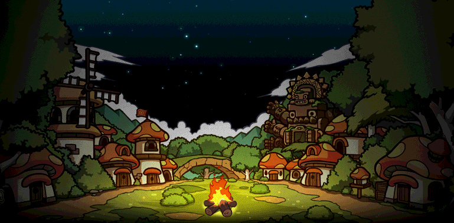

角色羈絆創造自己的路線
角色羈絆創造自己的路線 世界祕寶尋找意外的驚喜
世界祕寶尋找意外的驚喜 活動 × 休閒每天都有新故事
活動 × 休閒每天都有新故事


01 / BUILD
強化，讓努力看得見。
強化、裝備繼承、速洗潛能與等級同步。把時間留給成長，而不是重複點擊。
DUODUO SYSTEMS · SCROLL EXPERIENCE
不是只換一個版本、調一組倍率。
更在意你上線後，有東西玩、有人一起玩，也有值得留下來的理由。
THE WORLD OF DUODUO / 01
輪迴、天賦、副本與活動。想走哪條路，都能找到自己的節奏。
CHARACTER GROWTH / 02
重新開始，並把累積的力量帶回角色。
每次前進，都讓下一次挑戰更值得期待。
MORE THAN ONE WAY TO PLAY / 03
冒險不必只有打怪和練等。挑戰、便利、社交和休閒，都值得你慢慢探索。
保留原官網的強化、陣營、我的小屋，以及便利、探索與競賽內容。把原本多個滿版故事濃縮成好閱讀、又有層次的系統展示。
強化、裝備繼承、速洗潛能與等級同步。把時間留給成長，而不是重複點擊。
選擇立場，加入陣營對抗；再進入武陵 Roguelike，每一次挑戰都不一樣。
打完王、練完等，回到自己的空間。除了變強，也能有屬於自己的休息時間。
掛機、掃蕩、資源找回，讓時間花在真正想玩的地方。

冒險之書、世界秘寶、流浪商人與各種收藏。
拳王爭霸、今彩539、BINGO、OX、旗幟與雪域活動。
原官網的六個故事主題都保留在這一區；正式版仍使用既有系統資訊與連結，不會移除原有玩法。
不是只換一個版本、調一組倍率。
我們更在意：你上線之後，有沒有東西玩、有人一起玩，也有沒有值得留下來的理由。
此段保留原首頁的背景、介紹文字、品牌主視覺和輪播結構。獨立預覽使用示意輪播素材；正式整合仍採原後台輪播與雲端版本資料，不寫死 V282。
第一次看到多多谷，不需要先研究一堆名詞。先看看它能不能成為你想長期玩的那個服。
輪迴、陣營、強化、掛機、學院、BOSS、副本與各式特色活動，讓角色養成不只有一條路。
資源找回、掃蕩、裝備繼承、掛機等便利機制，減少重複操作，把時間留給真正想玩的內容。

打王、聊天、活動與競爭都不只是單機體驗，讓你有機會找到一起玩的玩家。

遊戲問題、BUG、活動疑問都有明確的官方處理入口，遇到問題不是只能自己摸索。

特權、活動、限定福利與各式玩家企劃會持續推出，不只一次性活動。

不用等下一個新服。版本持續更新，現在就能開始自己的進度。
多多谷不只是一個伺服器，更希望是一個讓大家相聚、冒險與成長的地方。

打王、聊天、玩家活動與競賽，讓旅途中有可以一起努力的人，也更容易找到留下來的理由。

輪迴、裝備與不同的成長路線，不要求所有人走同一條路，想慢慢玩也能照自己的節奏前進。

持續整理玩法、推出活動與新內容，讓下一次上線不只是完成昨天做過的事情。

版本不是結束，而是下一段內容的開始。
遊戲內容與更新資訊請以官方最新公告為準。
輪迴、天賦、強化、活動與各式特色玩法持續整理與擴充。
定期推出活動、福利與玩家企劃，讓每個版本都有新的事情可以期待。
不用先研究一大堆名詞。從認識玩法、準備下載，到正式加入冒險，這裡先把最常用的官方入口整理給你。
先看特色系統、遊玩指南與角色養成方向。
下載登入器／整合包，依官方下載說明安裝。
進入遊戲，認識社群並開始自己的旅程。
以下整理新玩家最常用的官方入口。你可以先下載登入器與整合包，再依照遊玩指南完成安裝；若有需要，也可直接前往官方儲值服務。